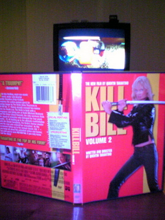

« 2004年08月 | メイン | 2004年10月 »
2004年09月30日
want big money?
アメリカ人は金持ちになるのが好き。
成功のための１０の秘訣、みたいな本やらCDなどがインフォマーシャルでしょっちゅう宣伝されてる。
またテレビ番組でも成功体験について語って「次はあなたです！」みたいなノリのが多い。
実際日本に比べて裕福層が大変多いらしい。アメリカンドリームという言葉があるけれどもみんな夢であふれている。
日本ではでしゃばらず、人並みに、というのが美徳という感じでみんなで力を合わせてコツコツするのが得意だ。この方式はお金がよく動いて経済が活発で、会社がぐんぐん成長する時期はみんな平等に利益が還元されるのでモチベーションが高まり抜群に力を発揮する。
でも一度不景気になりすべてを捧げた会社に裏切られ、リストラされそうという雰囲気ではこの方式はうまく働かない。
でしゃばりも必要。
でもアメリカのやり方ばっかりまねしてもうまくいかない。
それに日本ではこのような成功体験があまり身近じゃないのでどうやれば成功するかイメージがわかない。プロジェクトXで、日本の底力を再発見し、サラリーマンの活力になってはいるけれどもその多くは企業が焦点にあてられている。個人の成功ではない。
スポーツでもそうだけども上手な人をよく見て、自分のイメージをつくることが大切ですね。個人個人の成功が合わさって日本の成功に結びつくとうれしい。
投稿者 yusuke : 09:12 | コメント (1) | トラックバック
2004年09月29日
Diet Coke Lime
を飲んだ。
体の1/3くらいがコーラで出来ているので日本未発売のこの商品ははずせなかった。
まぁレモンのやつと似てすっきりして良い。日本でも売れるんじゃないの？
Vanilla Coke、Cherry Coke は好きだけども、日本では売れなそう。

Coke Lime
投稿者 yusuke : 08:56 | コメント (1) | トラックバック
2004年09月28日
Extreme MAKEOVER
整形によって自己実現の手助けをしようという番組。
http://abc.go.com/primetime/extrememakeover/index.html
２重あごから脂肪を吸引したり、鼻を削ったり(高くせずに低くする！)、また似合う化粧方法を教えたり。
整形手術している様もばっちり放送するのでちょとエグい。
それなりに見かけは変わるけども別人になってしまうようなその人の個性変わってしまうほどの改造がほどこされているわけではない。
生まれつき見かけに恵まれている人に比べ内面を磨くことに力を入れてきた人たち（だと思う）なのでコンプレックスが取り払われた彼らはみんな自信や笑顔に満ちあふれている。
やっぱり人間の魅力って外見よりも内面が大事だとは思うけども、整形という方法で外見にちょっと手を入れることでうまいこと内面を引き出せている気がする。
賛否両論あるだろうけどこういうのもありかな、と思った。化粧と同じでしょう。
自分がやるとしたらテレビ番組に頼もうとは思わないけど・・・。
投稿者 yusuke : 04:12 | コメント (0) | トラックバック
2004年09月27日
Welcome Danny!
今日は Danny をお迎えに朝から空港へ。
なんだかんだで初めて一人で乗る BART。
空港へはちゃんとたどり着いたけども帰りに方面を間違えた！
逆方面は一駅で終点だからまだよかったものの・・・今後は気を付けます。
っていうか日によって発車プラットフォームと方面が変わる BART が悪いんだ。ハン・ソロ風に言えば It's not my fault!

Danny お疲れ！3ヶ月頼むよ
Danny はサンフランシスコが初めてだというので手始めにフィッシャーマンズワーフとゴールデンゲートブリッジに行くことに。
ゴールデンゲートブリッジには霧がかかっていて綺麗だった。
近くに行くと何にも見えなかったけど・・・。
帰りには Muni を途中下車して Golden Gate Park の日本庭園あたりを散歩。入園料を徴収していたので外だけみて満足。うん、満足。

霧の上に浮かぶ幻想的な Golden Gate Bridge

日本庭園 = Japanese Tea Garden
投稿者 yusuke : 17:30 | コメント (0) | トラックバック
2004年09月26日
Go to the Archery Range!
今日はアーチェリーの練習場を探しに行くことにした。
Web で調べるとSan Francisco Archery というプロショップが見つかった。
近くの Golden Gate Park にアーチェリー場があるというのでどちらも行ってみることに。
SF ArcheryへはMarket StreetからMuniの３１番線でOcean Beach方面で30分くらい。すんなりみつかった。
でも人がいない。今日はアーチェリー教室のため（？）留守らしい。まぁ場所がわかったからいいや。買い物するときは予め電話しておこう。

SF Archery
アーチェリー場はSF Archeryから結構近く、バスで5分ほどのとこに。
ゴールデンゲートブリッジの近くにアーチェリー場があると聞いていたけど、ここのことだろうか。
やたらと広い芝生の広場に１０的くらい立っていて９０ｍまで射てる。無料で使えるけども、時には的が埋まっていて１時間くらい待つことがあるとのこと。利用したいのは１２月から１月頃なのでたぶん空いているだろう。
これで次回の出張は安心。

広々で無料のアーチェリー場
投稿者 yusuke : 13:21 | コメント (1) | トラックバック
Could you give me your hands?
スーパーへ買い物に行く途中、なにやら困っている人たちが。
一人が運転席で、一人が車を押している。ガス欠みたい。
手伝ってくれと言うので一緒に押すことに。ガソリンスタンドまでは１００ｍくらいなのでたやすいことだ。
ニューオリンズからはるばる３日くらいかけて車できたのだそうだ。
なんとかガススタンドへついて別れようとしたら２ドルくれ、たやすい御用だろ、みたいなことを言う。そんな小銭もなしにどうしてここまできたんだ、こいつら？
しかたなく２ドル恵んでやりバイバイ。不思議な国だ。
投稿者 yusuke : 12:04 | コメント (0) | トラックバック
2004年09月23日
Kill Bill Vol.2
のDVDを買った。
日本みたいにプレミアムBOXみたいのはないみたい。
ざっと見たところ日本の劇場公開版との違いはわからなかった。もちろん日本語版のDVDも買ってみるけども。
made in Mexico というのが感慨深い。
いつでもキルビルが見られるというのは幸せなことだ。日本にいたら１０月８日まで待たなければいけなかったし！

Budd が服部半蔵ソード代金を確認するとこ。
{kind=link}
投稿者 yusuke : 14:53 | コメント (0) | トラックバック
さ・か・な
今日は"さかな"という名前のSushi Barにて夕食。
握りと天ぷらを食べた。ウニが軍艦巻きでなく、握りで出てきたのがびっくり。普通の軍艦巻きの倍以上のボリュームのウニになるだろうか。大変満足。
でも他は普通。天ぷらも衣がハキハキしていなくて普通。
しゃりも随分少ないけどアメリカ人はこんなボリュームで満足できるのか？？？
まぁ、海外で食べる寿司は味的にはこんなものかと納得。日本人の舌を満足させるために店開いてる訳じゃないし。
#んでもウニはんまかった！

"さかな"にて
投稿者 yusuke : 14:22 | コメント (0) | トラックバック
2004年09月22日
MLB
を観に行った。San Francisco Giants と Huston Astros の試合。
実は野球を観るのは生涯で４度目くらい。

SBC Parkだ
観戦前に Nick の壮行会で Irish Bank に行き飲めないビールを２杯も飲まされてかなりくたびれていたけども大迫力に大満足。
バリーボンズは打たせてもらえなかったものの多くのナイスプレーに恵まれ 8-2 で圧勝。Jake の詳しい解説付きで一層楽しめた。
うーん、大リーグ最高。

広々！場外は海！

ボンズは今日は打たせてもらえず

一緒にいった Terry, John & Jake
投稿者 yusuke : 03:15 | コメント (1) | トラックバック
2004年09月20日
ラリー・キング・ライブ
にマーサ・スチュワートが出てる。公判中の当該者がテレビにでるというのは強烈だ。
っていうかマリファナ所持で逮捕されたばかりのマコーレ・カルキンもこの前出てた。マリファナは中毒性が低くむしろタバコより害がないとかいう話も聞くけど違法は違法。こういった人を許容する習慣がアメリカを悪くしているのだろう。割れた窓理論だ。
#マーサ・スチュワートはまだ犯罪者と決まったわけではないが・・・。
懲役刑を受けてもいいからさっさと裁判を終わらせたいのだとか言っているみたい。かなりお疲れの様子。
視聴者からの電話質問の様子からいまだにマーサを崇めている人がいるようだ。
投稿者 yusuke : 16:57 | コメント (0) | トラックバック
Collateral
を観た。
http://www.collateral.jp/
トム・クルーズがクールな殺し屋を演じるのだが、ストーリー展開に無理がありすぎでいまいちのめり込めなかった。
殺し屋の視点からすれば命なんて軽いものだ、というようなコンテクストで広島や長崎では一瞬でゴマンと人が死んでるだろ？みたいな話をしてた。劇中の台詞とはいえ軽率だ。
投稿者 yusuke : 14:43 | コメント (0) | トラックバック
2004年09月19日
Sky Captain and the World of Tomorrow
を観た。
http://www.skycaptain.com/
ジュード・ロウ、グウィネス・パルトロウ、アンジョリーナ・ジョリーとなかなか豪華なキャスティング。
前回の出張で目を付けていたのでこちらでリアルタイムに観られてうれしい。
全編に渡って背景はCGでしかもなんだかソフトフォーカス。かなり、かなり、かなりAvalonに画作りが似ている。
話は残念ながら話は100%は理解できてないんだけどストーリー展開のテンポが大変良く、音や絵に迫力がありとても楽しめた。
投稿者 yusuke : 17:55 | コメント (0) | トラックバック
海、浜辺 - Ocean Beach
今日は Simon に勧められて Jake と２人で Ocean Beach っていうおかしな名前
のビーチへ。
OceanBeachにて開眼
{kind=link}
そこそこ綺麗な海周辺は国立公園になっており、散歩をしていたら成り行きでゴールデンゲートブリッジまで散歩。
なんと１０Kmくらい。長いけど良い景色ばかりで飽きない。
その後は牡蛎を食べた、食べた、食べた。二人で４８個食べた!
１日で食べた量では今までで一番多い。うまい。
{kind=link}

デコが禿げ上がってるように見えるのは気のせい。本当に気のせい

Oyster, Oyster, Oysters!
投稿者 yusuke : 17:46 | コメント (0) | トラックバック
2004年09月18日
It's Friday night!
今日は開発部門にいる Simon と Irish Bank というパブでギネスを一杯。
金曜はみんなすでに週末気分で夕方５時と早い時間なのに飲みまくっていた。
その後は Farallon というシーフードレストランへ。
CitySearch というサイトで２００３年のサンフランシスコのレストラン第４位に選ばれている。
またもや牡蛎と、フォアグラと"何か"のメニューを注文。
なんとフォアグラが入ったまま鳥がでてくる料理でなかなか美味。
そしてまたもや映画館へ。Sky Captain and the World of Tomorrow を見たかったけども公開初日で混雑してそうなので Cellular を見た。
電話を使った仕掛けは面白いけどいまいち新しさに欠ける、っていうかだいぶ寝てしまった。
以前訪れたことのあるサンタモニカのビーチがでてきた。いかにもカリフォルニアって感じで綺麗。ここサンフランシスコはいかにもサンフランシスコって感じ。
投稿者 yusuke : 17:26 | コメント (0) | トラックバック
2004年09月17日
ナイトクラブで一杯
今日は Harry Denton's Starlight room というナイトクラブで夕飯。
泊まっているホテルの最上階-21階にあるんだけど、サンフランシスコのナイトクラブでナンバーワンに選ばれたところらしい。
素晴らしい夜景を見ながらカクテル、牡蛎を堪能。
サンフランシスコ最高！
http://www.harrydenton.com/
投稿者 yusuke : 15:52 | コメント (0) | トラックバック
ボールペン１本でチャリンコ泥棒！？
FOX のニュースを見ていたら、「次はバイカー（自転車乗り）にとってすんごいバッドニュースです」みたいな前置きでひっぱり CM が入った。
何事かと思えば一番安全といわれている U 字型のロックをボールペン一本で簡単に開けてしまう方法がインターネットで公開されたというのだという。見てみるとボールペンを突っ込むだけでいとも簡単に解錠してる。ある程度コツはいるのかもしれないけどこれは問題すぎる。
サンフランシスコは駐車場が全然ないので自転車通勤をしているひとがとても多いからニュースになるのだろう。
具体的には Kryptonite社の U-Lockという商品らしい。似たようなのを日本でもよく見かけるので今後同じ手口で盗みが多く発生するかも。
自転車屋さんがうんざりしながら在庫をまとめて返品している映像が印象的だった。
投稿者 yusuke : 15:22 | コメント (1) | トラックバック
2004年09月16日
RESIDENT EVIL II Apocalypse
を観た。
http://www.sonypictures.com/movies/residentevilapocalypse/site/base.html
バイオハザード２のこと。米国ではバイオハザードの映画化だというのは前面に出していないみたいだ。
派手なアクションにセクシー＆キュートなヒロイン２人。しかも主演ミラ・ジョヴォビッチのヌード付き(一瞬)。
たいした伏線もなく頭を空っぽにして楽しめるすばらしい娯楽作。
「無茶苦茶なー」と笑いつつ爆音にドキドキして最後まで楽しめた。
前作を観てなかったけど全く問題なし。
投稿者 yusuke : 15:41 | コメント (0) | トラックバック
2004年09月15日
THX1138
を観た。
http://www.thx1138movie.com/
ジョージルーカスの初期の SF 作品。リメイクかと思ってたけどそのものらしい。(大学時代の習作のリメイクではあるが)
来年のスターウォーズ3公開前のタイミングを狙って上映したのかな？
スピード感の満点のカーチェイス！鉄仮面のロボット警官！ジェットエンジン搭載だけどもすぐにオーバーヒートする車！
どれをとっても最高(?)だが時差ボケの延長で不覚にも1/3くらい寝た。
設定は面白いけど話の展開が単純かな。もうすこしどんでん返しが欲しかった。最後のオチはちょっと笑える。
DVD↓がスターウォーズと一緒に出るらしいので思わず予約。
THX-1138 ディレクターズカット...THX-1138 George Lucas Direcor's Cut
投稿者 yusuke : 08:00 | コメント (0) | トラックバック
2004年09月14日
寿司
夜は John Green に寿司に連れて行ってもらう。海外で食べた寿司のなかでは一番うまかった。
寿司の後はすぐ近所のバーでアメフト観戦。ジントニックを頼んだらえらくきつかった。
アメフトのルールを半分くらい説明してもらい、さらにその半分くらいを理解した。John はフィラデルフィア出身で Eagles というチームのファンらしい。来週の月曜日は Eagles 戦があるそうだ。
アメフトの後は野球をちょっとみた。なんと選手とファンの乱闘騒ぎがあり20分近く試合が中断した。選手がファンにイスを投げつけてた。無茶苦茶だ。かなり珍しいことらしい。
http://sports.yahoo.com/mlb/recap?gid=240913111
イスを投げた選手は逮捕されたらしい。当たり前か。
http://sports.yahoo.com/mlb/news;_ylc=X3oDMTBpcDBuM2RlBF9TAzk1ODYxNzc3BHNlYwN0aA--?slug=ap-rangers-fanfight&prov=ap&type=lgns
投稿者 yusuke : 02:00 | コメント (3) | トラックバック
2004年09月13日
サンフランシスコォ
２ヶ月ぶりくらいのサンフランシスコ。
今回はレンタカーはしないので電車で市まで行く。Kenny が迎えに来てくれたのでスムースに乗れた。
時差ぼけで結構ねむたかったけど寝てしまうと翌日つらいのでケーブルカーミュージアムまで散歩したりなどしながらまったり過ごした。
夜は近所のスーパーで買い出しをして Kenny 邸でピザパーティー。オーブンは初めて使うというが、結構まともに焼けてよかった。味は普通。
投稿者 yusuke : 01:41 | コメント (0) | トラックバック
2004年09月12日
Go to San Francisco!
同僚が急病のため急遽３週間ほど出張することに。最近プライベートでバタバタしてる時期なのでちょっと大変！
いや、でもなんにしろ年末に３ヶ月ほど出張することは決まっていたので下見期間としてピッタリだ！？ ありがとう&まってるぜ、Danny&Ako;!
もってくものリスト
・ないと出張できない
パスポート、航空券、国際免許証(今回は車使わないけど一応)
現金$300ほど(基本的にクレジットカード払いなのでチップ＆緊急用)
・IT関連
PC/Mac、ACアダプタ、マウス（仕事に必要）
デジカメ、メモリカードリーダ、うまうま（出張/旅行時の基本）
充電器、充電池
携帯電話、充電器
・薬、サプリメント
バファリン、パブロン（そうそう体調崩さないと思うけど）、オロナイン(最近お気に入り)
Ni/Kuan（出張中もしっかりトレーニングしないとね）
・生活用品
カミソリ、耳かき、爪切り、歯磨き(アメリカのホテルは置いてありませんね)
整髪料(アメリカはなんか種類少ないよね)
・飛行機用品
スリッパ（あるとリラックス）、耳栓（あると安眠）、空気まくら（姿勢が決めやすくなる！）
・娯楽
DVDごっそり(ホテル、アパートではDVD観ながら仕事♪)、iPod
・服
Tシャツ/下着/靴下x3、長袖ジャージx1(足りなければ現地調達)
投稿者 yusuke : 00:20 | コメント (1) | トラックバック
2004年09月08日
WindowsXP導入
Win 環境に必要な情報のまとめ。
・Remote Desktop Connection Client for Mac
XPをMacから操作
http://www.microsoft.com/japan/mac/collaboration/rdc/default.asp?navindex=s16b
・Windows XPの正体 > リモート デスクトップで遠隔操作する
http://www.atmarkit.co.jp/fwin2k/xp_feature/012remotedesktop/remotedesktop_02.html
・左利き用マウスカーソル
カーソルが左上を向いていたら仕事にならない。
http://www.vector.co.jp/soft/dl/win95/amuse/se069930.html
ちなみにMacではこれ↓
http://www.unsanity.com/haxies/mightymouse
・lacha
お手軽アーカイバ/エクストラクタ
http://www.vector.co.jp/soft/win95/util/se130263.html
・秀丸エディタ
秀Termの時から使ってるけど特別良いわけではない。最近タブ化したりエンコーディングの判定が賢くなったり若干使い勝手が良くなった。
http://hide.maruo.co.jp/software/hidemaru.html
・AltIME
Windows の入力モードの遷移は理解しがたいので変換、無変換キーで IM の on/off を切り替えられるように。
http://www.forest.impress.co.jp/lib/sys/hardcust/keyboard/altime.html
・コマンドプロンプトでTabで補完、Caps Lock を CTRL に
BASIC のプログラミングをしなくなって Caps Lock は使わなくなった。
http://www.st.rim.or.jp/~sakisan/
・Command prompt here
DOSプロンプト > "cd " とタイプ > フォルダをドロップ > リターン
の手間が省ける。
Powertoysって公式アングラソフトみたいは不思議なソフトで以前はただのレジストリだったけど今ではちゃんとインストーラがあるらしい。
以前みたいに exe ファイルをダブルクリックすると数多くのファイルがデスクトップに展開されて困るようなこともない。
http://www.microsoft.com/windowsxp/downloads/powertoys/xppowertoys.mspx
・WebLogic Platform 一式
これがないと始まらない。
http://jp.bea.com/evaluation/index.html
・Process Explorer
まぁ、色々検証するのに必要。
http://www.sysinternals.com/ntw2k/freeware/procexp.shtml
・Lunascape
IEのレンダリングエンジンを使うタブ型ブラウザ
http://www.lunascape.jp/
投稿者 yusuke : 15:40 | コメント (0) | トラックバック
2004年09月05日
サプリ・サプリ・サプリ
学生のときからやっているアーチェリー。
最近大学のコーチをやることになり、自分でも力を入れている。
学生のときみたいに毎日朝から晩まで練習するわけにはいかないので効率よく最大のパフォーマンスを発揮するため、金で解決できることには金を使うことに。社会人ならでは。
で、スポーツをやるにあたり金を使うことといえばまずはサプリメント？
スポーツ関連の専門学校を出ている友人のすすめでサプリメントとしてはアミノ酸、Musashi が良いとのこと。
Musashi はオーストラリア製のアミノ酸サプリメントで、筋力向上、疲労回復など目的別に製品がわかれているのが特徴。
多くのアスリートに支持されているらしいけどとにかく高いのが難点・・・。
海外の通販サイトをちょっと探したけど海外に出荷しているところが見つからなかった。
国内でさがしたところ、ざっと安いところとして CNI というのが見つかった。個人輸入代行をやっているところで筋力向上の Kuan というのが 300g で通常1万円以上するところ8000円。
トレーニング後のリカバリーを助ける Ni とのセットで16900円というのを注文していた。
ホームページのつくりがなんだか寂しい雰囲気で心配だったけども注文したら速攻対応してくれた。振込み当日に発送をしてくれて大満足。
投稿者 yusuke : 22:43 | コメント (1) | トラックバック
2004年09月03日
触る神に祟りあり
新宿駅でちょっと、じゃなくかなり強面の人が足をひろげて１．５人分くらいの幅を使って座っていた。７人掛けで６人しか座れていない。
特別疲れてないしいちいちトラブルを巻き起こすのも嫌なので立っていたのだが、60〜70くらいの年配の方が電車に乗ってきた。
かなり疲れている様子できょろきょろ空いている席をさがしているのでしかたなく強面の人に声をかける。
私「すいません、もうすこし詰めていただけますか？」
強面「(ちょっと素直に？詰めつつ)なんで俺だけにいうんや？あっちに座ってる奴らにも言えよ！」
私「いや、ココまで(シートに目安の線が引いてある)が３人分ですから、お二人(強面には彼女？が一緒にいた)でかなりの幅をつかってるんですよ」
強面「そんなの参考にならんわ、体系なんて人それぞれだろ！」
私「もちろんそうですけど皆さん平均的な体系してますから変わりありませんよね？」
強面「なんで決めつけるんや、人それぞれだろ！向こう側にも言え！」
私「すいません、皆さん詰めてくださいね、（年配の方に）どうぞ」
年配のかたはちょっと遠慮しながらも座る。
強面「(いきなり立ち上がって)いまごろ言ったって遅いわ、なんで俺だけに言うんや？謝れ」
・・・典型的ないちゃもんだ、典型的すぎる。
私「すいません」
強面「謝り方が足りないわ、土下座しろ」
〜ごちゃごちゃと彼なりの理論が延々と続き、土下座はまだしも頭を下げて謝れと言うことに〜
私「すいません」
強面は睨みをきかせながらようやく座る。それでも彼女にまだ満足しない旨をごちゃごちゃいっている。
年配の方はおまえは正しい、みんなわかってる、若いのによくやったなどと言ってくれた。
しばらくしてもずっとごちゃごちゃ強面は彼女に愚痴を言ってるのでちょっと危ない雰囲気があった。
電車を降りると案の定一緒に降りてくる。念のために別の車両に乗り込むとついてきて隣に立った。なんだよ、あんなダラダラ座るほどつかれてないんじゃん・・・。
次の駅で降りてもやはりついてくるのでこりゃ危ないと思い通報。
「１１０番です。事故ですか？事件ですか？」うれしくないことに最近通報慣れしているので落ち着いて事情を話せた。すぐ来てくれるとのこと。
強面は特別手を出しているわけではないので捕まることはないし、恐らく電話掛けたのはハッタリだと思ったのだろう。
駅のホームにすわってもずっと目の前にいて睨みを利かせてくる。参った参った。
警察がくるまでは睨みながら、携帯で私の写真を撮ろうとしたり、タバコをふかして顔にふーっと吹きかけてきたりする。
私「ここ禁煙ですよ」
強面「だれが決めたんや？ここに吸い殻あるだろ？おまえ拾えよ。」
なんてこった、わかってたことだけどこの人頭悪い・・・。つきあってあげることにして最初から落ちている吸い殻を拾ったら吸うのをやめた。変なところは素直だ。吸い殻は投げ捨てたのでついでに拾ってやった。こんなことしても良心が痛む人ではないけれども。
7,8分くらいでようやく警察が来た。5,6人来た。パトカー２台でわざわざサイレン鳴らしながら来た。
警察「どうしたの？君？呼んだの。」
私「はい」
案の定強面は「何かあったんすか？」とかしらじらしいことを言う。
警察は察してくれてちょっと離れたところで事情聴取。警察署まで来てくれとかいわれたら面倒だなと思ったけどもすぐに帰してくれた。
しばらくは電車に乗る時間をずらすようにとのアドバイス。殴られたり刺されたりもしないのに通報して叱られたりしないかと思ったけども大丈夫だった。あの手の輩は人前で手を出すことは絶対にないのでナイス判断とのこと。また付けられたりしたら電話してこいと。
ちょっと怖い思いをした一日でした。同じ車両に乗っている人や、警察にまでちょっと迷惑をかけたので正義もほどほどにしようと思った。正偽くらいがちょうどいい。
しばらく夜道は気を付けないと・・・。
同じ車両にいた方、ご迷惑おかけして申し訳ありませんでした。
触る神に祟りあり。
投稿者 yusuke : 00:08 | コメント (5) | トラックバック
2004年09月01日
Oral-B Brush-Ups
変なものをみつけた。
・Oral-B Brush-Ups
http://www.oralb.com/brushups/
指にはめてつかう歯磨きみたいなもの。こんなのでしっかり磨けるわけないけどいざというときに威力を発揮するらしい。
Flash の説明がなかなかいい味だしてる。
http://www.oralb.com/brushups/oralb_brushups.asp
投稿者 yusuke : 18:03 | コメント (0) | トラックバック
Google ニュース
Google にニュースのページが突然できた。
http://news.google.co.jp/news?lr=&ie;=UTF-8&inlang;=ja&tab;=wn&ned;=jp
実際コンテンツ自体は Google が保持しているわけではなく単なるリンク集みたいだけども綺麗にまとまっている。
今まで検索メインであまりコンテンツには凝っていなかったけどもいよいよ Yahoo などの役割を侵食していくつもりか？